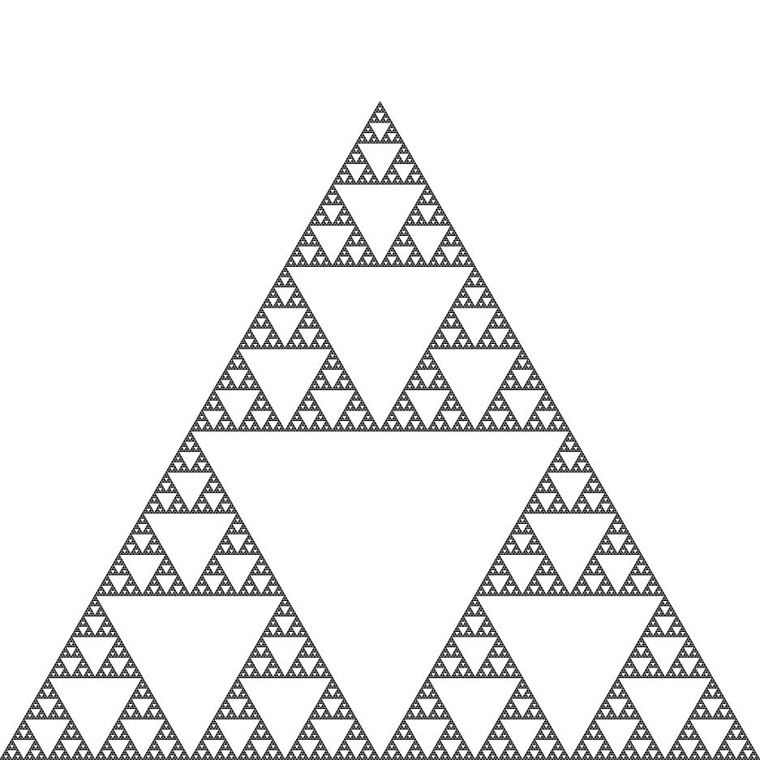
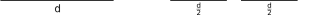
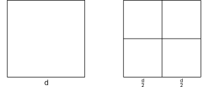
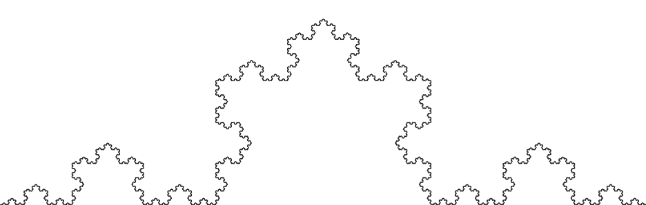
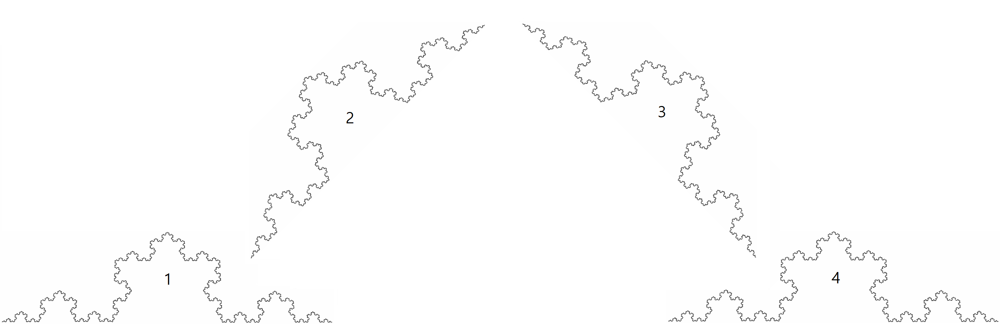
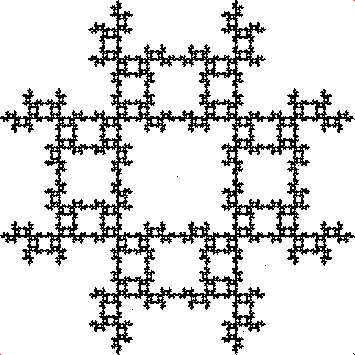

Definicija fraktala

Trikotnik Sierpinskega kot primer samopodobnega fraktala.
Fraktali zaradi nespecifičnosti in kompleksnosti teh oblik niso uradno definirani, vendar obstajajo nekatere bolj
splošne definicije z nekaj pomanjkljivostmi.
Najpreprostejša razlaga fraktala izhaja iz samopodobnih lastnosti teh figur, ki jih vidimo pri najpreprostejših vrstah
fraktalov.
Eden od teh je trikotnik Sierpinskega, prikazan na spodnji sliki. Glavna struktura je trikotnik, ki je razdeljen na 3
manjše trikotnike s polovično dolžino stranice.
S ponavljanjem delitve na novo nastalih trikotnikih v neskončnost dobimo prikazan fraktal.
[Fractal] [3Blue1Brown]
Zaradi tehnike grajenja fraktalov iz vedno manjših podenot lahko vidimo, kako se v obliki pojavi samopodobnost, ampak za uporabo fraktalov v primerih resničnega življenja to ne zadošča.
Samopodobnost se seveda nahaja v naravi, vendar ni pogosta.
Benoit Mandelbrot, matematik 20. stoletja, ni bil zadovoljen s posploševanjem grobih oblik narave v preprostejše oblike kot krivulje.
Bil je mnenja, da so fraktali lahko orodje, s katerim natančneje opišemo naravo.
V naravi oblike niso pravilne, saj se ob povečavi ta oblika ne posploši, ampak pa je groba na vseh ravneh.
Ideja pojava grobosti na vseh povečavah oblike je skoraj enaka ideji fraktala, da je oblika prvotnega telesa vidna na vseh ravneh.
V definicijo je bila vpeljala ideja fraktalne dimenzije (o kateri je napisano več v naslednjem podpoglavju), ki nam omogoči, razširitev fraktalov na nenavadne oblike, ki ohranjajo grobost ali nepravilnost pri vseh povečavah.
Mandelbrot je v svoji knjigi "The Fractal Geometry of Nature" fraktale definiral kot oblike, katerih "Hausdorffova dimenzija" (dimenzije, katerih vrednost je lahko realno število) presega "topološko dimenzijo" (dimenzije celih vrednosti).
Na žalost tudi ta definicija sama po sebi ni popolna, saj se pojavijo izjeme, ki imajo Hausendorffovo dimenzijo enako topološki dimenziji.
[3Blue1Brown]
[Hausdorff dimension]
Z vsem tem je fraktal mogoče neformalno definirati kot množico, ki ima vsaj nekatere od naslednjih lastnosti:
- je samopodobna
- njena dimenzija presega njeno topološko dimenzijo
- ima nepravilno obliko
- ni diferenciabilna (v primeru grafa funkcije)
- ohranja podrobnosti pri vsaki povečavi
- ima rekurzivno definicijo
[VESNA IRŠIC. Fraktalna dimenzija]
Fraktalna dimenzija
Za razumevanje fraktalne dimenzije, moramo najprej pogledati lastnosti celih dimenzij.
Za začetek vzamemo za primer daljico, ki ima dimenzijo 1 in dolžino \(d\).
Če daljico presekamo na pol, dobimo dve novi daljici z dolžino \(\frac{d}{2}\).

To lahko storimo tudi z kvadratom, ki ima 2 dimenziji in dolžino stranice \(d\).
Če prvotnemu kvadratu zmanjšamo stranico na \(\frac{d}{2}\), dobimo štiri nove kvadrate s četrtino ploščine.

Ta postopek lahko razširimo na višje dimenzije.
V treh dimenzijah dobimo rezultat 8 novih kock s polovično dolžino stranice.
V štirih dimenzijah dobimo 16 novih teseraktov
(4-D različica kocke) s polovično dolžino stranice in tako naprej.
Možno je tudi stranice skrčiti z drugačnimi faktorji.
Za primer lahko vzamemo tretjine.
V prvi dimenziji iz ene črte tako dobimo 3 nove s tretjino dolžine.
V drugi dimenziji iz kvadrata dobimo 9 novih s stranico, dolgo tretjino originalne.
V tretji dimenziji s kocko dobimo 27 novih kock s stranico, dolgo tretjino originalne.
To lahko nadaljujemo v višje dimenzije.
Viden je vzorec, število manjših kopij se s povečanjem dimenzije za 1 poveča za obratno vrednost faktorja krčenja.
Če to posplošimo v formulo, kjer je \(N\) število kopij, \(D\) dimenzija in \(r\) faktor krčenja (\(0 < r < 1\)),
dobimo naslednje:
$$N=\left(\frac{1}{r}\right)^D$$
V primeru, da kopijo poskušamo razširiti, je \(r\) faktor širjenja (\(1 < r\)), pa dobimo naslednji izraz:
$$N = r^D$$
Ko izrazimo dimenzijo, pa se nam pojavi naslednja formula (\(0 < r < 1\)):
$$ D = -\frac{\log{N}}{\log{r}}$$
Ali (\(1 < r\)):
$$D = \frac{\log{N}}{\log{r}}$$
Običajne oblike, kot črte in kvadrate, lahko izmerimo z enodimenzionalnimi merami, dvodimenzionalnimi merami in tako
naprej.
Primer tega so metri, dolžino merimo v metrih, ploščino v kvadratnih metrih, volumen v kubičnih metrih in tako naprej.
Te mere pa pri naših fraktalih ne zadostujejo.
Na sliki spodaj je narisana Kochova krivulja, ki na prvi pogled izgleda kot navadna črta z začetno in končno točko,
vendar je njena dolžina neskončna.
Ni važno kako blizu pogledamo in poskusimo izmeriti dolžino krivulje, spet bomo naleteli na enako krivuljo kot na začetku.
Prav tako je ploščina krivulje nič, saj je narejena zgolj iz črt, ki pa nimajo ploščine.
Tako vemo, da se Kochova krivulja nahaja nekje med 1. in 2. dimenzijo, saj je z enodimenzionalnimi merami neskončno
dolga, z dvodimenzionalnimi pa dobimo rezultat 0.
Če bi hoteli izmeriti Kochovo krivuljo, bi potrebovali mere, ki zadostujejo njeni dimenziji.
[Fractal]
[Vu Do Math. Fractal dimensions.]

Kochova krivulja z neskončno dolžino in ploščino nič.
Da izračunamo dimenzijo fraktala, pa lahko uporabimo formulo, ki smo jo odkrili prej.
Za primer lahko vzamemo Kochovo snežinko, ki je narisana na zgornji sliki.
Potrebujemo dva podatka, koeficient skrčenja $r$ in število kopij \(N\).
Ker je Kochova krivulja narejena tako, da črto razdelimo na tretjine in srednji del zamenjamo s trikotnikom brez spodnje
stranice, je primerno vzeti \(r=\frac{1}{3}\).
Če Kochovo krivuljo skrčimo, vidimo, da lahko originalno krivuljo zgradimo iz \(N=4\) kopij nove krivulje.
[3Blue1Brown]

Kochova krivulja, zgrajena iz štirih Kochovih krivulj z dolžino 1/3 originalne
Če te podatke vstavimo v formulo in jo vnesemo v kalkulator, dobimo naslednje:
$$D = \frac{\log{4}}{\log{3}} \approx 1,26$$
Risanje fraktalov
Iterativni funkcijski sistem
Iterativni funkcijski sistem je eden od načinov prikazovanja fraktalov, pri čemer je končni rezultat po navadi
samopodobni fraktal.
Ideja za delovanjem sistema je sestavljenost fraktala iz mnogih enakih podenot, na katerih je bila uporabljena določena
funkcija.
Večina teh funkcij je kontraktivnih, kar zmanjšuje razdalje med točkami in posledično tudi oblike.
Od tod samopodobnostne lastnosti tega načina prikazovanja.
[Iterated function system]
Eden najzanimivejših primerov Iterativnega funkcijskega sistema je igra kaosa, kjer iz na pogled čisto naključne igre
dobimo fraktalne oblike.
Za risanje trikotnika Sierpinskega sledimo naslednjim navodilom.
Kot osnovno obliko si izberemo trikotnik in v ravnino narišemo samo oglišča tega trikotnika.
Nato si v ravnini izbermo poljubno točko (lahko je znotraj ali zunaj trikotnika).
Naključno izberemo eno od treh oglišč in se premaknemo na polovico daljice, ki je nastala med poljubno točko in
naključnim ogliščem.
Spet naključno izberemo eno od treh oglišč, vendar se tokrat pomaknemo na polovico daljice med novonastalo točko in
naključnim ogliščem.
To ponavljamo za vse novonastale točke in se nam po določenem času nariše trikotnik Sierpinskega, saj je možnost, da
točka pristane v praznini trikotnika Sierpinskega enaka nič (razen če je bila tja postavljena prvotna točka).
[Chaos game]
Če podobno ponovimo na kvadratu, le da istega oglišča ne smemo izbrati dvakrat zapored, se nam pojavi naslednji fraktal:

Igra kaosa na kvadratu. Vir: https://www.wikiwand.com/en/Chaos_game
L-Sistem
L-sistem ali Lindenmayerov sistem je vrsta gramatike, ki je zmožna zelo dobro definirati rekurzivne strukture.
Sisteme je ustvaril Aristid Lindenmayer, biolog in botanist, ko je iskal način prikazovanja rasti celičnih organizmov in rastlin.
Le kot dodatek je zaradi rekurzivne narave teh sistemov danes mogoče z njimi ustvariti tudi fraktale.
L-sistemi za delovanje potrebujejo "abecedo" ali spremenljivke in konstante, aksiom ali začetni niz simbolov ter pravila, ki predhodnim nizom spremenljivk določijo nov niz elementov "abecede".
Z iteracijo ustvarjamo izhodni niz, katerega pomen interpretiramo kot navodila za risanje določene oblike.
[L-system]
Za primer lahko vzamemo sistem s spremenljivkama \(A\) in \(B\), aksiomom \(A\) in pravili \(A \rightarrow AB\) in \(B \rightarrow A\). (\(n\) predstavlja število iteracij):
- \(n=0: A\)
- \(n=1: AB\)
- \(n=2: ABA\)
- \(n=3: ABAAB\)
- \(n=4: ABAABABA\)
- \(n=5: ABAABABAABAAB\)
Za risanje fraktalov z L-sistemi definiramo eno spremenljivko ali več spremenljivk kot risanje črte v določeno smer z določeno dolžino.
Poleg tega pa definiramo še konstante \(+\), kar pomeni obrat v levo za določen kot, \(-\), obrat v desno za določen kot, \([\), shrani trenuten položaj ter \(]\), ki povrne sistem v nazadnje shranjen položaj.
To nam omogoča risanje dvodimenzionalnih oblik ter risanje razvejanih oblik.
Za primer imamo trikotnik Sierpinskega, kjer \(F\) in \(G\) oba pomenita risanje črte:
[L-system]
- spremenljivke: \(F, G\)
- konstante: \(+, -\)
- aksiom: \(F-G-G\)
- kot obračanja: \(120^\circ\)
- pravila: \(F \rightarrow F-G+F+G-F\) in \(G \rightarrow GG\)
Končno delitveno pravilo
Končno delitveno pravilo je rekurzivni način deljenja večkotnikov in drugih dvodimenzionalnih oblik na manjše dele.
To nam omogoča izdelovanje geometričnih fraktalov, vendar nam vseeno dopušča delne spremembe pri vsakem koraku.
Končno delitveno pravilo razdeli določeno teselacijo ali tlakovanje (pokritje ravnine z geometrijskimi liki) in jo spremeni v novo teselacijo iz manjših večkotnikov.
En način deljenja večkotnika imenujemo vrsta ploščice in en način deljenja roba oblike vrsta roba.
[Finite subdivision rule]
Escape-time fraktali
To so fraktali, narejeni z uporabo formule ali ponovitvene relacije (enačba, ki rekurzivno definira zaporedje kot elemente, katerih vrednost je enaka funkciji prejšnjega elementa).
Z uporabo formule ali ponovitvene relacije na vsaki točki se nam lahko pojavijo fraktali.
Najbolj poznan primer teh fraktalov je Mandelbrotova množica, ki je množica točk \(c\) v kompleksni ravnini za katere neskončno zaporedje iteracije kompleksnega polinoma \(z_n=z_{n-1}+c\) je omejeno.
Pod to skupino spadajo še naslednji fraktali: Juliajeva množica, Lyapunov fraktal, fraktal goreče ladje in še mnogo drugih.
[Fractal]
[Mandelbrotova množica]
Miškin klik za povečavo, premikaj miško, da premikaš sliko.